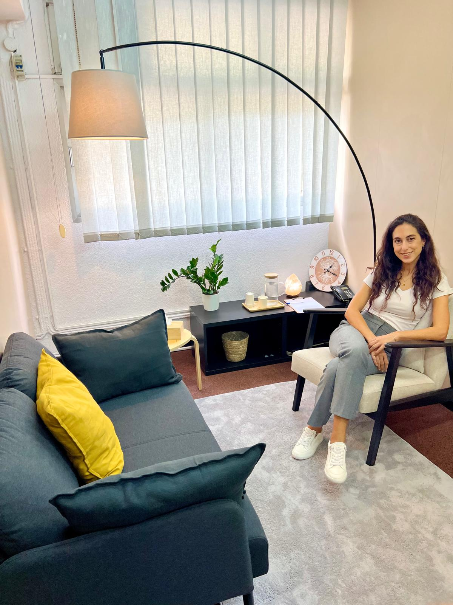

Espacio para comprenderte y acompañarte
Psicoterapia integradora para adultos y parejas
Reserva una sesión
Sobre mí
Soy psicóloga y psicoterapeuta con 10 años de experiencia.
Será un placer acompañarte en tu proceso de transformación personal,
ofreciéndote un espacio seguro donde puedes sentirte con total libertad.
Servicios
pero te saca de donde estás.
Método y enfoque
- Trabajo desde un enfoque integrativo, constructivista y sistémico.
- Aplico diversas técnicas como EMDR / estimulación bilateral, de PNL y de terapia Gestalt, cuando es adecuado.
- Explico conceptos y teorías para facilitar una mejor comprensión del ser humano.
- Ofrezco recursos y herramientas prácticas para gestionar las emociones y la actitud ante la vida.
- Si la persona lo desea, propongo tareas o reflexiones entre sesiones para seguir integrando el proceso.
Con ganas de acompañarte en este espacio acogedor, pensado para que te sientas cómodo/a y puedas expresar con libertad lo que te preocupa. La consulta se encuentra en Barcelona, al lado de Sagrera: en la Avenida Meridiana, 308, entresuelo G-51. Sant Andreu, 08027 Barcelona.

A través de mi perfil en Doctoralia, puedes conocer la experiencia de otras personas
en su proceso de terapia conmigo y consultar la disponibilidad en mi agenda para reservar una sesión:

Testimonios
Preguntas frecuentes
Aquí tienes respuestas breves a las dudas más habituales:
Mi calendario está actualizado. Solo tienes que elegir el día y la hora que mejor te vayan y hacer la reserva gratuita. Me pondré en contacto contigo y recibirás un recordatorio antes de la visita. Reserva una sesión.
Dependiendo de la semana, a menudo hay horas disponibles dentro de los próximos días. Las más solicitadas son las de la tarde, a las 18h y 19h. Te recomiendo consultar mi agenda y escoger el día y la hora que mejor se adapte a ti. Reserva una sesión.
No trabajo con aseguradoras. Mis sesiones son para pacientes particulares. Si lo necesitas, puedo facilitarte el justificante o la factura para que tu empresa pueda reembolsarte parte o la totalidad del coste de las sesiones.
En la primera sesión nos conocemos y exploramos qué te ha llevado a pedir ayuda, cómo te sientes y qué necesitas. Hablamos de lo que te gustaría conseguir con la terapia y valoramos cómo enfocarlo juntos. Lo más importante es dar el primer paso para empezar a comprenderte y acompañarte mejor.
Las sesiones duran una hora. La frecuencia depende de cada caso: al principio suele ser semanal o quincenal y más adelante se adapta según el nivel de malestar, el momento vital y las preferencias de la persona.